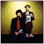
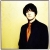
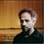
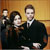

Press Kit
Please select "Save Target As" for any of the following documents.
Contact Jean Cook at jean@nitratehymnal.net for any further information.
Anti-Social Music + Gena Rowlands Band: The Nitrate Hymnal
Download the Press Release [PDF]
 Download a hi-res JPG
Download a hi-res JPG"Massey's work gets a chillingly beautiful treatment. There are serious musical chops at work here, liquid runs of 20th century classical violin, electrified and electrifying guitar buzz, discordant brass and even, at one point, a church organ. Hauntingly melancholy, restrained and minimalist, the music brings out the shiver in lyrics like 'A time machine/There on the screen stands someone I long to touch, to hear, to smell again/There's a small kind of heaven in the movies'" - Pop Matters
"Think of Godspeed gone more classical and less glacial, add some better vocals and dose liberally with purified theatricality. I hear an air of detachment here that's missing from the symphonic post-rock of your choice. This is in no way damnation; in fact, it typifies the life/film dynamic the opera – or rather this song-cycle from the opera – seeks to convey. Not an easy listen, but most certainly a memorable one." - Dusted Magazine
"On The Nitrate Hymnal, Anti Social Music returns with less to prove, backing the cinema-obsessed, operatic Scott Walker-isms of the Gena Rowlands Band. Bob Massey's saved his most genuinely affecting material to date for this outing. Nitrate Hymnal is that rare record that's pretty right away and gets creepier with each spin. Sometimes rebellion means screwing with conventions and heads before they really know what's happening." - Flagpole
"Infused with Anti-Social's soaring avant-garde chamber style and the superb swelling vocals of various female and male singers, the songs come off as fresh, exposed, and heartbreaking. All in all, The Nitrate Hymnal is an intense modern opera that even people who might not like tremulous singing could appreciate." - Venus Zine
PRESS
Nitrate Hymnal January 2003 Premiere
- Washington Post Review by Joe Banno [285k PDF]
- Washington Post Preview by Phillip Kennicott [412k PDF]
- Washington Times Preview by Terry Ponick [178k PDF]
- Nitrate Hymnal in the Senior Beacon by Michael Toscano [271k PDF]
- Nitrate Hymnal in the Washington City Paper by Mark Jenkins [377k PDF]
David Wilson
- David Wilson in The Portland Mercury
- Media Arts Information Network
- David Wilson in The Independent Film & Video Monthly [PDF]
Bob Massey and Punk Not Rock
- Interview about the Nitrate Hymnal record with Bob Massey in The Washington Post
- The Gena Rowlands Band (Bob Massey) in Ink 19 [PDF]
- "Punk Not Rock" in The Washington City Paper Page 1 [PDF]
- "Punk Not Rock" in The Washington City Paper Page 2 [PDF]
- "Punk Not Rock" in The Washington Post [PDF]
PHOTOS
- Bob and David [221k JPG]
- Bob Massey [248k JPG]
- David Wilson [153k JPG]
- David Schweizer [141k JPG]
- "Young Mimi and Robert" [147k JPG]
{kind=link}
{kind=link}
{kind=link}
{kind=link}
{kind=link}
{kind=link}
{kind=link}
{kind=link}
All photos © 2002 Ben Tankersley